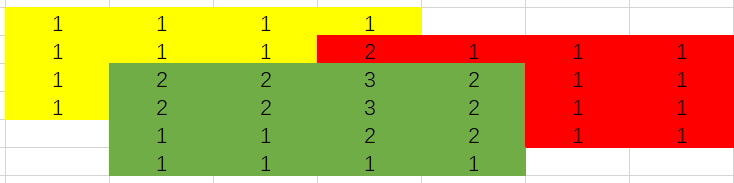

The 2nd Ucup Finals 游记
Day0
到达了华为小镇，进酒店的第一感觉是这个酒店好高级，速速拍照发给朋友。
然后当天晚上跑去尝试加入扑克，结果发现一堆外国友人，社恐跑了，然后尝试加入 mojang ，结果不会日麻，在旁边看队长打日麻，决定速速学会日麻，后几天尝试线下打（之前学过三麻，太久没打几乎忘光了）。
回酒店后下了个日麻，打了几把入门，然后队长传授新手公式：有字打字，没字打一九，不吃碰杠。在遵循队长公式的基础上，在铜组猛猛上分。
Day1
今天的活动是去广州观光，由于队内三人似乎对这场观光没什么兴趣，所以都在打雀魂，于是在今天，可以看到 Nemesis 三人在广州各处坐在长椅上打雀魂。
中午和晚上聚餐见到了很多知名 OIer ，尝试将人和常用 id 建立 link 感觉有些选手的实际形象和我的想象形象有点区别。
晚上没什么活动，就是在酒店老老实实呆着，毕竟晚上回去都已经十一点了，已经没精力了，在一点就睡了。
但队长超级神力，熬夜准备 AI 工具，四点才睡，真有点猛的。
Day2
中午华为挑战赛是调用没用深度思考的 AI 实现深度思考，整体感觉就是搁那罚坐，看着队长表演，提前体验 AI 科研炼丹，然后就是评测炸成依托了，评测压力很大，直接把 API queue 了很长时间，唯一庆幸的是 pretest 的 judge 和交上去的评测独立，pretest 的 API 在中后期都感觉还好。
正常就是看着队长疯狂的修改 prompt ，然后我们三个人试图讨论出一些想法，在实践后发现，还不如尝试优化 prompt ，后面就是上网找题，给 AI 喂题，甚至去论文网站直接找最新科研结果来喂。最终结果就是 AI 在哥德巴赫猜想取得了 95 分的好成绩，无敌了。
尝试过的想法包括但不限于：
- 每次继承前一次回答的一个前缀（感觉上是正优化）。
- 每次回答的温度不同（失败，不如一直 0.7 度）。
- 最后让 AI 整理一遍回答过程（失败，在浪费时间的情况下没起到期望效果）。
不过很厉害的是，队长赛前整理的 AI 工具这场比赛派上用场了，中间 judge 卡的时候，直接调用他的 API 替代评测，实现了线下评测，非常牛。
但是评测爆炸的影响也确实还是有的，没有评测反馈还是太难受了。只能说调用 AI 的挑战赛题还是太新颖了。
下午热身赛，某个铸币写不对 Hash + 二分，结果发现是一个很唐的错误，被吐槽，别人用 AI 写都一遍写对了给正赛各种铸币操作埋下伏笔。
晚上在酒店看了一会 Mygo!!!!! 和 刺团对邦，尝试做了点 ATcoder 题目但是猛猛假，最终没过，埋下伏笔，打了一会雀魂就睡觉了。
Day3
今天正式赛，赛前目标：能过三题就是胜利。
赛前惯例，猛猛灌兴奋剂，队长灌咖啡，我和队友比较有中华文化的熏陶，灌 Pu’er Tea ，走了会路，感觉确实精神很多。
开始队长使用他的 AI 工具，将 PDF 切割并且创建了若干个文件夹和中文题面，打印中文题面后就可以让队伍里面的英语残障人士加速读题。
借助中文题面，我迅速的看完大部分比较短的题目，然后开始思考我比较感兴趣的 M ，感觉上非常 ATcoder 。
然后队长在搞 K ，我与 Imakf 隔了一个位置，看不到他在干什么。
后面 USA1 过了 I ，我去看了一眼，是签，就直接写了过了，然后接着去想 M ，期间队长跟我说了一下 K 的结论，大体思路我觉得没问题，但是我觉得有可能在具体细节上出问题，我感觉他的做法可能会 $x>10^9$ ，提醒了一下我就接着想 M 了，此时 Imakf 跟我说有个交换代数的题和一个矩阵树的题，那确实有点无敌了。
等到半小时过去后，有队伍过了 J ，后续有队伍过 C ，这两题相比，我感觉 J 更对我胃口，我就去想 J 了，像 C 这种贪心题目，多人赛的时候还是应该丢给最有感觉的人去做，然后发现 J 用折线法考虑能比较自然的想到贪心做法，然后就开始写了。这个时候队长下机和 Imakf 讨论 K ，发现要准备若干个质数之类的问题，然后队长去思考 C 了。
然后伏笔回收，一个思路清晰的题目，我在写完过样例后疯狂的 WA ，WA 到我怀疑人生，这时队长秒了 C ，Imakf 应该是在玩交互和 L 。
中间队长上机写了一会 C ，在没过样例还是 WA 了后，下机和 Imakf 讨论。我在卡到怀疑人生后，上机写了对拍，结果一下子就拍出来了，发现我忘记判断段数是否够了，唐完了，改了过了（不过从赛后的角度来看，确实写麻烦了，存在更好写的做法，但原做法也没多难写，一个小时才过，我的代码能力确有问题）。
然后队长神力，说着我听不懂的话，上机猛猛 C ，然后就过了，给我看傻了，太猛了（赛后来看，队长说他赛时没有严格证明，所以第一次 WA 以为是自己结论错了，后面发现是写错了，而且对拍也错了，全部改对后就过了）。
这个时候我和 Imakf 交流 L ，队长在玩几何和交互，此时两个半小时。
Imakf 跟我说了他的思考结果：类似树上的数（不同在这道题目要求所有边都必须恰好操作一次），一棵树合法的必要条件是构成一个大的置换环，同时路径长度和为 $2n-2$ 。后一句话等价于每条边每个方向恰好经过一次。他觉得是充要的。但是他不知道后面怎么矩阵树。
我想了一会，我也觉得这玩意是充要条件（update：赛时想的证明是错的，难蚌。队长评价：早就该不证明做题了。），然后发现这等价于在一个大的置换环的条件下，每个子树的编号对应置换环上一个连续段，这看起来更像是 dp ，而不是矩阵树。
接下来队长和队友去想 F,K,M ，我去想这个玩意怎么 dp 。根据以前的经验，我觉得我大概率不能一遍想出这个 dp ，很有可能会假好几次，如果无法规避犯错，那就让犯错时间尽可能短，所以尽量压缩每一次上机的时间，尽可能在有清晰的转移的时候再上机，争取尽可能快的写完，写的快就有容错。
于是，队友看着我贯彻着这个理念，上去写了两发过不了样例的做法，然后又下机。虽然每次上机前都和 Ima 说了我的 dp，但是看他懵逼的表情，我觉得他应该没听懂我在说什么，但与其让他听懂完后再让他思考有没有错，反正机时是空的，不如直接上机验证（第一发是忘记 $c_{i,j}$ 不同，第二发是计数计多了，不过最终做法其实就是基于第二个做法的改良，不过是改良了下计数的结构）。
于是我红温了，疯狂借上厕所的名义走路，比较有进展的消息是，队长声称几何是圆的 V 图，不可能写，他们两声称 F 会了一个比较难写的做法，Ima 在写，然后他们在玩 K 。
在思考过程中，一堆可能的计数方案挤在脑内，给我想着十分的晕，虽然我十分清楚这里面一定存在正确解法，但就是抓不住这个做法，相当的痛苦，此时榜上也过了一堆了。
不过还好最后突然发现了一个十分清晰的计数结构，然后立直了，但是并没有一发，小样例过了，大样例没过，以为做法又假了，猛猛红温，在差点绝望的时候发现有个字符写错了，改完一发了，出狱。
准备开摆时队友说 F 做法有点难写，看看我有没有些好写的写法，在听完他们的思路后，我感觉来了，突发奇想，你能不能直接在二维坐标系上移动方框计数，发现虽然我完全不能明白这玩意的逻辑在哪，怎么自然的想出来，和原题关系是怎样的，但是结果好像是一致的，无敌了。然后维护连续段扫描线一下就行了（队友的做法好像也是类似的，听他说是维护颜色段，但是他好像没有这个转化，导致很难写，虽然我并不知道不转化怎么维护颜色段处理）。
上机开写，一个半小时，优势在我，尤其是还有 copilot ，现在的问题是能不能多一题。然后典中典香槟开早，狂暴开 WA ，终于在修了一堆 BUG 后，剩半个小时的时候 AC 。
进入垃圾时间，最后半小时完全不知道干什么，我接着想 M 了，如果奇迹想出可能还能短时间写出来，其余题一点感觉没有，队友在玩 K ，队长在与 AI 交互。
最后五题结束，虽然没牌虽然参加前的说法是只要不倒数就行~，但是起码不算很丢脸。
进入赛后交流环节，USA1 太猛了，好像两倍我们了，有一堆神犇找队长聊天，我也顺便认识了下，叉姐、Q 老师等人，还有不认识的外国人。交换代数那题太神秘了，好像说是让 AI 帮忙处理出 Jordan 标准型之类的，再让 AI 帮忙在 Jordan 标准型下去做就行了？？？真就无限制格斗，我以为我们已经很善用 AI 工具了，没想到还有高手。
然后就是很多难题，晕了。在 AI 的帮助下以 100 罚时俘虏夏日影，如果在线下，我会说 AI 有很大的功劳，但在线上，我只能说还得练，还得加训。
结束后，晚上回去猛猛打日麻，虽然因为疯狂常考，把一些人常考走了，而且因为猪脑过载，经常当召唤师召唤高手指导我打牌，但是总体上打的挺开心的。而且也听了很多关于日麻的新的想法，例如：牌效、进张之类的，感觉对日麻又有了点理解，然后只是从新手变成了新手 + 。还顺便单方面认识了下致远星的人。感觉打日麻是我少有的能跟这些强队沟通的机会了，确实没有队长那种能力，感觉和这些强队的人沟通是相当遥远的事情，这加深了我提高自己能力的冲动。不过短暂的接触感觉这些神犇都挺友善的，也许社牛一点能多一些沟通机会？不懂。
期间好像小道消息知道我们队挑战赛分相当高，那真是队长神力了，队长真是 AI 高手，期间麻将桌的人对我们队获得奖金表示了羡慕，并且询问做法，我只能含糊其辞地回答了，毕竟我那一场和摸鱼没有本质区别，可能区别在于我提供了两个负优化，不如咸鱼，甚至一个半小时队长打了代码我才知道他们在干什么，我们三个真强了属于是。
然后一点半回去酒店看队长雀，直到三点才睡觉，睡前发现定闹钟只有五个小时睡觉时间红温了，睡眠不足和熬夜的感觉真难受啊，不懂队长怎么在这种状态下进行训练的。
Day4
早上起来，不出意味的跟似了一样，只睡了四个半小时，痛苦。
然后就是早上听挑战赛做法，大伙都是说英语的，没听懂，但是看到了各种长得很像的 prompt ，都是 “你是一个专业的数学家…” ，难蚌，但是听队长说，AI 催眠也是科研的一部分，不得不说，这一趟学会了点 AI 和麻将，也算是有不少收获了。
然后就是听各种讲座，加了一堆 HR ，很恐怖，有点热情了。
感觉实在睡不着觉，而且困的想不出题，于是写游记来了。
后面见了下 SJTU 的传奇前辈：叉姐、高爷、主代码手，拍了张照，这些曾经只在别人口中听过的 SJTU 传奇人物现在具象化了。
结束后去吃了个晚餐，和队友尝试互相抱起，最后因为微薄的体重劣势，被 Ima 哈里路大旋风，甩得我差点吐出来。
后三人去 Ima 房间爽玩雀魂，一点多才回到酒店。
然后我整理了下行李，洗了个澡，看了会 B 站的答辩就睡觉了。
Day5
被我设定的 8:15 的闹钟迷迷糊糊吵醒，然后又迷迷糊糊睡着，再次醒来 8:26 ，叫醒队长，紧急收拾。
就在我以为我昨晚收拾完万事大吉时，队长：“你五个行李怎么上飞机。”，遂紧急收拾，都准备自行打车了，结果后面发现还有戏，在 9:06 成功上车，多于行李让前台寄到上海。
就在以为一切万事大吉时，Ima 的飞机票的一个字打错了，差点赶不上飞机，这下全员恶人了。
然后就是回 SJTU ，路上三麻队友胡了个四暗刻，直接被送走。
回到宿舍，结束了，一切都结束了，Nemesis 的故事就此完结，留在了 SJTU ACM 历史上的一页。
部分题解
比赛链接：https://qoj.ac/contest/1919
I
简要题意：Little Cyan Fish 正在为第二届环球杯乒乓球锦标赛准备赛程，并希望根据以下规则确定比赛的胜者：每场比赛的胜者获得 1 分，另一方不加分。比赛将在满足以下两个条件时结束：
- 至少一方获得了 $m$ 分；
- 一方至少领先 2 分。
给定一个字符串 $s_1 s_2 \dots s_n$，每个字符为 ‘A’ 或 ‘B’，表示每一场比赛的结果，‘A’ 代表玩家 A 获胜，‘B’ 代表玩家 B 获胜。你需要计算在比赛结束前总共得分多少次，或者判断比赛是否永远不会结束。
做法
显然先循环到 $<m$ 的最大轮数，然后多跑几轮就行了，虽然我觉得 $2$ 轮应该就可以了，但是懒得细想，保险起见跑了 $4$ 轮。
J
tag：贪心
简要题意：Little Cyan Fish 有两个二进制字符串 $s$ 和 $t$，二进制字符串是由字符 0 或 1 组成的字符串。
对于一个二进制字符串 $s$，令 $c_0(s)$ 表示 $s$ 中 0 的个数，$c_1(s)$ 表示 $s$ 中 1 的个数。显然，$c_0(s) + c_1(s) = |s|$，因为 $s$ 只包含 0 和 1。
Little Cyan Fish 想将字符串 $s$ 分割为 $k = |t|$ 个子字符串 $\sigma_1, \sigma_2, \dots, \sigma_k$，其中 $s = \sigma_1 + \sigma_2 + \dots + \sigma_k$。对于每个子字符串 $\sigma_i$，要求满足以下条件：
如果 $t_i = 0$，则 $c_0(\sigma_i) > c_1(\sigma_i)$。
如果 $t_i = 1$，则 $c_0(\sigma_i) < c_1(\sigma_i)$。
帮助 Little Cyan Fish 找出一种方法来分割字符串，或者报告是否无法满足这个要求。
做法
考虑折线法，则 $0$ 表示下降，$1$ 表示上升。
一个想法是先把连续的 $0/1$ 压缩，可以发现，这等价于下降至少多少格或者上升至少多少格。
在序列变成 010101… 类似物后，可以发现一个事情，我们在每个位置只关心最优答案，即尽可能分更多段，相等段数的情况下，高度尽可能矮/高，证明也很简单，一个劣解后面能到的状态，这个优解也一定能到达。
然后就做完了。时间复杂度：$O(n)$ 。
我当时是先变成 010101… 找分段点，然后再构造具体方案，但其实多想一点就会发现，根本没有必要变，直接贪心就是对的，结论是一样的，这样可以把分段点和具体方案合并，短一点。
那为什么不一开始就不合并来想呢？那当然是合并完能更自然的想出这个做法，但是最后没多想一步变成更好写的做法确实是我唐了。
L
tag：计数dp
简要题意：给定一个树 $T = (V, E)$，它有 $n$ 个顶点，顶点编号从 $1$ 到 $n$，每个顶点初始有一个值 $p_i$，其中 $p_i$ 是从 $1$ 到 $n$ 的一个排列。
需要进行以下操作 $n - 1$ 次：
- 选择一条边 $e = (x, y) \in E$。
- 交换顶点 $x$ 和 $y$ 的值 $p_x$ 和 $p_y$。
- 移除这条边 $e$。
操作结束后，树 $T$ 将变成一个没有任何边的图，并且每个顶点的值变成目标排列 $q_i$。
该树 $T$ 被称为 “yummy”，如果存在一种方式使得所有的操作后，$p_i$ 可以变成 $q_i$，对于所有 $1 \leq i \leq n$ 。
给定一个无向图 $G$，该图有 $n$ 个顶点，并且有 $c_{i,j}$ 条边连接顶点 $i$ 和 $j$，你需要计算该图中有多少个 “yummy” 生成树。两个生成树如果包含不同的边集，则视为不同的生成树。
做法
首先一个自然的想法，每个点从起点到终点画一条有向路径，类似树上的数，可以得到一个必要条件是所有边的两个方向都恰好被经过一次。
但是很容易举出这不是充分条件的证据，然后可以观察出另外一个必要条件是所有点构成一个置换环（这队友观察出来的，我不知道怎么自然的观察出来，一个可能的想法是从反例看出来，比如只要存在一个点指向自己的 $\ge 2$ 的图就一定是不合法的）。
到这一步，感觉上就已经十分充要了，尝试一下证明结果赛时证明是错误的：首先，根据边数为 $2n-2$ 可以得到，一定有一个有向路径长度为 $1$ ，比如是 $x\to y$ ，然后将这条边切掉，会断成两个子树，把 $y$ 那边的子树经过 $(x,y)$ 边的点的终点设为 $x$ ，然后先把 $y$ 那边的子问题跑了，再切这条边，再跑 $x$ 这边的子问题，递归证明即可。
在证明完这个结论后，开始考虑如何计数一个大置换环的答案，考虑割掉一条边，两端子树点的编号序列长什么样，可以发现，长度和为 $2n-2$ 等价于每个子树的编号序列在 $1,2,…,n$ 的环上是连续的，而这个条件看起来就非常能 dp 计数了。
所以，问题转化为，统计子树编号连续的树的个数。
由于题目中两点之间的边为 $c_{x,y}$ ，同时状态中大概率要记录 $l,r$ ，同时转移大概率要枚举断点，这就已经 $O(n^3)$ ，所以可以知道一个事情，我们需要在不增加维护和转移复杂度的情况下，处理哪个是根以及转移时乘 $c_{x,y}$ 的问题（准确来说，要处理根也是因为 $c_{x,y}$）。（我第一发忘记处理根的问题，第二发则是在尝试解决这两个问题的时候计数计多了）
处理根的一个简单想法是，直接指定根为 $l$ ，即记 $f[l][r]$ 为点编号为 $[l,r]$ ，根为 $l$ 的合法答案（这里的合法指的是以 $l$ 为根后，每个子树都是一个连续段）。
但是一个问题是，我们如何转移？
考虑连边的条件，即现在我们打算将 $[l,r]$ 接到 $x$ 上面，因为我们指定了 $l$ 为根，但并不代表和 $x$ 连边的是 $l$ ，在手玩后，可以发现并不是所有点都可以连的（第二发错误原因），比如连边 $(x,y)$ ，那么充要条件为切掉 $y$ 的父边后，$y$ 的子树编号为 $[k,r]$ 。
在发现了这个事情后，由于我们不可能将合法的点放在状态中，可以连边前也不知道 $x$ 是谁，换句话说，合法的点应该在转移中确定，而不是状态中，在明白大体思路后，想出 dp 转移就只是时间问题了，虽然我确实使用了很多时间才想出来。
我的转移思路是，子树的结构也是在转移过程中处理的，换句话说，在 $[l,r]$ 接到 $x$ 后，有两种选择，一种是给 $[l,r]$ 里面接着接树，完善子树里面的结构，一种是这个子树结构已经完成了，接着接新的子树。这样的好处在于，我们要知道可以接在 $x$ 上的点，就要在转移中获取子树内部结构，而这样 dp 就可以解决这个问题。
（想到这个转移的契机在于发现合法的点一定在一条链上，而且区间 dp 的 $n^3$ 实际上非常宽松，所以我就想直接在转移过程中找出这条链）
这个转移思路有个问题就是，既然子树结构是在转移过程中完成的，那怎么保证给子树连边的时候，子树的这条边是否合法，从而陷入递归问题。当时一开始的想法是也许这个递归问题能够通过多设置几个状态（0/1/2 之类的）来解决，或者可能性质很好，恰好就没有这个问题。
常考后发现，确实性质很好，没有递归问题。解决方法为，我们先把 $[l,y]$ 接到 $x$，再把 $[y,r]$ 接到 $y$ 上即可（这个还算自然，因为有了上面的思路后，整个子树实际上只要关心合法点构成的链，其余点当看不见，这样这个转移思路可以简述为，这条链先转移到连边的点，再把链补全），然后设计 $dp$ 状态就做完了。
$f[0/1][l][r]$ 表示根为 $l$ 的合法子树，$0$ 表示准备接新子树，$1$ 表示完善旧子树。
然后就做完了。
时间复杂度：$O(n^3)$
写博客的时候突然发现这个转移好像矩阵乘法，可能真与矩阵有点关系？不懂。
F
tag：数据结构，扫描线
简要题意：Little Cyan Fish 在一个二维世界中探索雨水的世界！这个世界是一个 $N \times M$ 的网格，我们用坐标 $(i, j)$ 来表示网格中第 $i$ 行第 $j$ 列的格子，其中 $1 \leq i \leq N$，$1 \leq j \leq M$。
一个神奇的猫控制这个世界的雨水过程。这个过程持续 $S+1$ 秒，编号从 1 到 $S+1$。在开始时（即时间 0），所有格子中没有水滴。
每一秒钟 $i$ （$1 \leq i \leq S + 1$）发生以下三个步骤：
降雨：对于每个没有水滴的格子，猫会独立并随机地决定是否在该格子中生成一个新的水滴。
水滴移动（除了在第 $S+1$ 秒）：如果 $i \leq S$，所有现有的水滴会同时由于重力和风的作用进行移动。一个位于格子 $(x, y)$ 的水滴会移动到 $(x + 1, y + d_i)$，其中 $d_i$ 为风速。
水滴消失：任何移动到 $N \times M$ 网格之外的水滴都会永久消失。
你需要计算可能的降雨场景的数量。两个场景被认为是不同的，当且仅当至少有一个格子 $(i, j)$ 在某个时刻 $t$（$1 \leq t \leq S+1$）在一个场景中有水滴，而在另一个场景中没有水滴。
做法
首先队友跟我说了一个观察，一个雨滴在 $(x,y,t)$ 三维空间中，根据其运动轨迹会构成一条链，则其对答案的贡献为链长。
接下的做法是：不妨假设有一个雨滴在 $(0,0)$ ，在一个无限大的空间中去看其下落轨迹，然后用一个矩形移动，将其每个时刻的连续段乘起来就是答案，这玩意等于答案非常好证明，因为连续段确实是一一对应的，但是这个空间代表着什么，我确实没意识到。
这样就只要统计所有有答案的矩形的答案了，考虑一排的矩形往一边扫，这样我们就只需要维护雨滴的连续段，然后每个连续段会根据长度，对一排的矩形产生固定的贡献，直接维护就行了。
时间复杂度：$O(n(\log{n}+\log{V}))$
思考一下这个空间和这个矩形代表的什么，我目前感觉上是，空间代表了 $x,y$ ，轨迹和矩形移动代表了 $t$ ，但也不能全部说通。感觉很神秘，没想到什么很好的解释。
队友的思路是，考虑一个矩形，然后矩形跟随雨滴移动，最后把每个点被覆盖次数 $+1$ 乘起来就是答案，下面是一个例子：

听他说可以维护，而且赛场上貌似有人是这么实现的，好猛的数据结构能力。